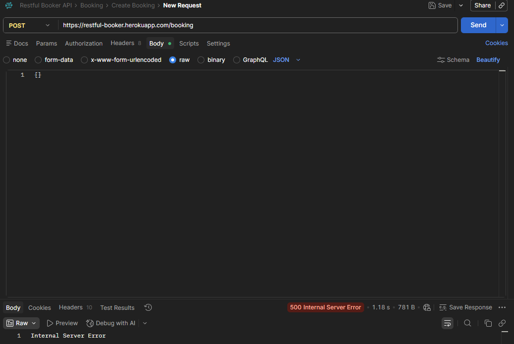
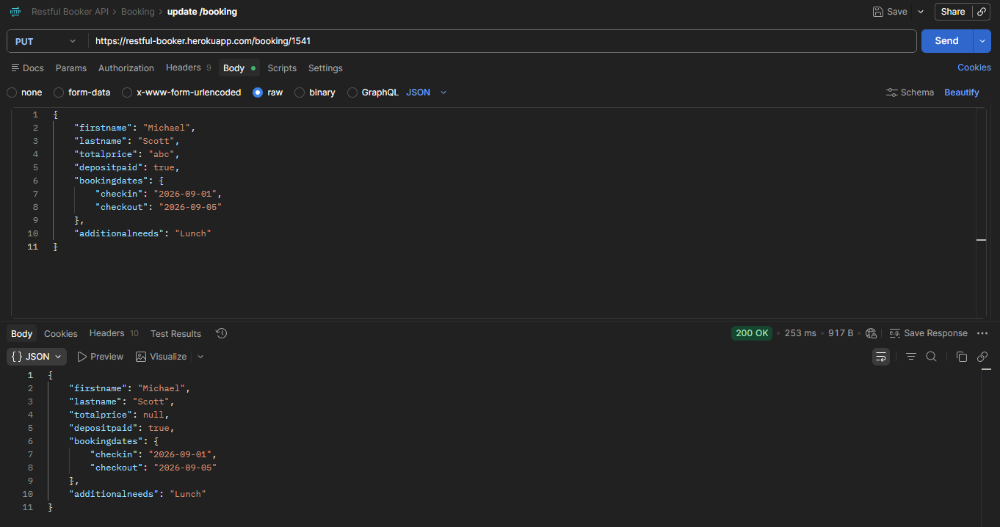
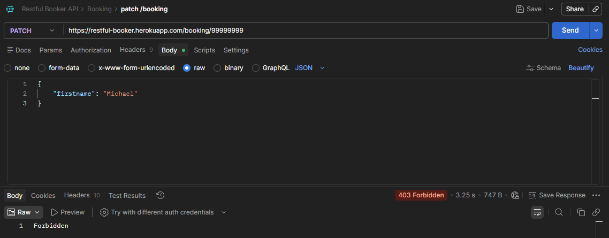

Menguji Restful Booker API dengan alur kerja QA profesional
Proyek latihan yang sengaja dikerjakan memakai siklus lengkap STLC — analisis API, strategi uji, desain test case, eksekusi, sampai pelaporan defect — bukan sekadar menembak endpoint di Postman. Hasilnya 97 test case, 91,75% pass, dan 10 laporan bug.
- Peran
- QA Engineer — analisis, desain test case, eksekusi, pelaporan defect
- Aplikasi diuji
- Restful Booker API (public demo,
restful-booker.herokuapp.com) - Tools
- Postman, Qase.io, Markdown, GitHub
- Eksekusi
- 97 test case · 7 suite · selesai 13 Agustus 2026
- Kode
- Repositori publik di GitHub
Kenapa proyek ini ada
Banyak portofolio API testing berhenti di satu koleksi Postman berisi request yang berhasil. Masalahnya, itu tidak menunjukkan hal yang sebenarnya dikerjakan seorang QA: memutuskan apa yang perlu diuji, kenapa, dan apa artinya ketika hasilnya tidak sesuai harapan.
Jadi proyek ini saya kerjakan dengan urutan yang sama seperti di tim beneran — dokumen strategi dan test case ditulis sebelum request pertama dikirim, hasil eksekusi dicatat di test management tool, dan setiap temuan diangkat jadi laporan bug terstruktur dengan langkah reproduksi dan bukti.
Cakupan pengujian
Delapan endpoint, dikelompokkan jadi tujuh suite. Prioritas ditentukan di awal: autentikasi dan operasi tulis (create, update, delete) masuk kategori kritis, health check paling rendah.
| Suite | Endpoint | Test case |
|---|---|---|
| Authentication | POST /auth | 15 |
| Create Booking | POST /booking | 22 |
| Get Booking | GET /booking, GET /booking/{id} | 12 |
| Update Booking | PUT /booking/{id} | 18 |
| Partial Update Booking | PATCH /booking/{id} | 15 |
| Delete Booking | DELETE /booking/{id} | 10 |
| Health Check | GET /ping | 5 |
Di luar cakupan, dan ditulis eksplisit di dokumen strategi supaya tidak ada asumsi menggantung: UI testing, load dan stress testing, penetration testing, verifikasi database, dan review source code.
Teknik desain test case
Test case tidak disusun dengan menebak-nebak, tapi memakai teknik black box standar supaya cakupannya bisa dipertanggungjawabkan dan tidak banyak yang tumpang tindih.
Positive testing
Request valid harus menghasilkan respons sukses — token terbit, booking tersimpan, data kembali utuh.
Negative testing
Kredensial salah, field wajib hilang, JSON rusak, ID tidak ada, akses tanpa token.
Boundary value analysis
String kosong, angka sangat besar, batas minimum dan maksimum karakter.
Equivalence partitioning
Input dikelompokkan agar tidak menulis puluhan test case yang menguji hal yang sama.
Error guessing
Menebak titik rawan berdasarkan pola kegagalan yang umum — null, tipe data tertukar, header salah.
Hasil eksekusi
Eksekusi dicatat di Qase.io. Angka di bawah memakai hasil terakhir per test case unik — eksekusi ulang dihitung sebagai riwayat, bukan test case tambahan.
| Suite | Total | Pass | Fail | Blocked | Pass rate |
|---|---|---|---|---|---|
| Authentication | 15 | 15 | 0 | 0 | 100% |
| Create Booking | 22 | 16 | 6 | 0 | 72,73% |
| Get Booking | 12 | 12 | 0 | 0 | 100% |
| Update Booking | 18 | 18 | 0 | 0 | 100% |
| Partial Update Booking | 15 | 13 | 0 | 2 | 86,67% |
| Delete Booking | 10 | 10 | 0 | 0 | 100% |
| Health Check | 5 | 5 | 0 | 0 | 100% |
| Total | 97 | 89 | 6 | 2 | 91,75% |
Seluruh kegagalan terkonsentrasi di satu modul: Create Booking. Konsentrasi seperti ini justru informatif — menunjukkan validasi input di jalur pembuatan data adalah titik terlemah, bukan masalah yang tersebar merata.
Temuan utama
Sepuluh laporan bug ditulis lengkap dengan langkah reproduksi, request body, hasil yang diharapkan versus hasil aktual, dampak, dan usulan perbaikan. Tiga yang paling berbobot:
firstname dari request body membuat API menjawab
500 Internal Server Error, bukan 400 Bad Request.
Dampaknya bukan sekadar kode status yang keliru: klien API jadi tidak bisa
membedakan mana kesalahan input dari sisi mereka dan mana kegagalan di sisi server —
sehingga tidak tahu apakah request layak diulang atau harus diperbaiki dulu.
Perilaku yang sama muncul pada lastname yang hilang, body {} kosong,
dan seluruh field bernilai null.

{} ke POST /booking menghasilkan error server yang sama.
Ini memperkuat dugaan bahwa pengecekan field wajib berjalan setelah data terlanjur
diproses, bukan sebelumnya.

200 OK persis seperti yang dinyatakan dokumentasi. Namun empat perilakunya
tetap saya angkat jadi laporan bug: totalprice menerima string "abc",
menerima nilai negatif, checkin menerima format tanggal tidak valid, dan
tanggal checkout boleh lebih awal daripada checkin.
Statusnya lulus terhadap kontrak API, tapi melanggar aturan bisnis yang masuk akal
untuk sistem pemesanan hotel.

Dua test yang diblokir
Dua test case di modul Partial Update tidak bisa dieksekusi dan dicatat sebagai Blocked, bukan dipaksa jadi Pass atau Fail. Membedakan ketiganya penting: Fail berarti sistem berperilaku salah, Blocked berarti pengujiannya sendiri belum bisa dijalankan — dan keduanya menuntut tindak lanjut yang berbeda.

Yang saya pelajari
Pelajaran terbesarnya datang dari modul Update Booking. Awalnya saya menganggap
pekerjaan selesai begitu semua test case berstatus lulus — angka 100% terasa seperti
garis akhir. Padahal test case saya sendiri yang menetapkan ekspektasinya:
saya menulis “harapkan 200 OK” karena itu yang dijanjikan dokumentasi,
lalu API memenuhinya, lalu semuanya hijau.
Yang saya lewatkan adalah bertanya apakah 200 OK itu pantas.
Sebuah sistem pemesanan yang menerima tanggal checkout mendahului checkin jelas keliru,
seberapa pun konsistennya dia dengan dokumentasi sendiri. Dari situ empat laporan bug
di modul itu lahir — bukan dari test yang gagal, tapi dari membaca ulang hasil yang lulus.
Kesimpulan yang saya bawa: test suite hijau hanya membuktikan sistem sesuai dengan ekspektasi yang saya tulis, bukan bahwa ekspektasi itu benar. Menguji spesifikasinya sendiri adalah bagian dari pekerjaan.
Batasan dan tahap berikutnya
Proyek ini sejauh ini murni pengujian manual. Kerangka folder untuk otomasi sudah disiapkan di repositori, tapi koleksi Postman dan eksekusi Newman-nya belum diisi — jadi tidak saya klaim sebagai bagian dari hasil kerja. Yang selesai dan bisa diperiksa adalah dokumentasi strategi, 97 test case, bukti eksekusi, manajemen tes di Qase, dan sepuluh laporan bug.
Rencana pengembangan berikutnya, sesuai urutan prioritas:
- Mengisi koleksi Postman dengan assertion
pm.testuntuk seluruh suite. - Menjalankan koleksi lewat Newman dan menyimpan laporan hasilnya di repositori.
- Menyambungkan eksekusi otomatis ke GitHub Actions.
Akses kode dan laporan. Seluruh dokumen, test case, bukti eksekusi, dan laporan bug tersedia terbuka di repositori GitHub. Hasil eksekusi juga bisa dilihat langsung lewat laporan publik Qase.
Restful Booker adalah API demo publik yang memang disediakan untuk latihan pengujian. Temuan di halaman ini adalah hasil observasi terhadap perilakunya, bukan laporan terhadap sistem produksi milik pihak lain.